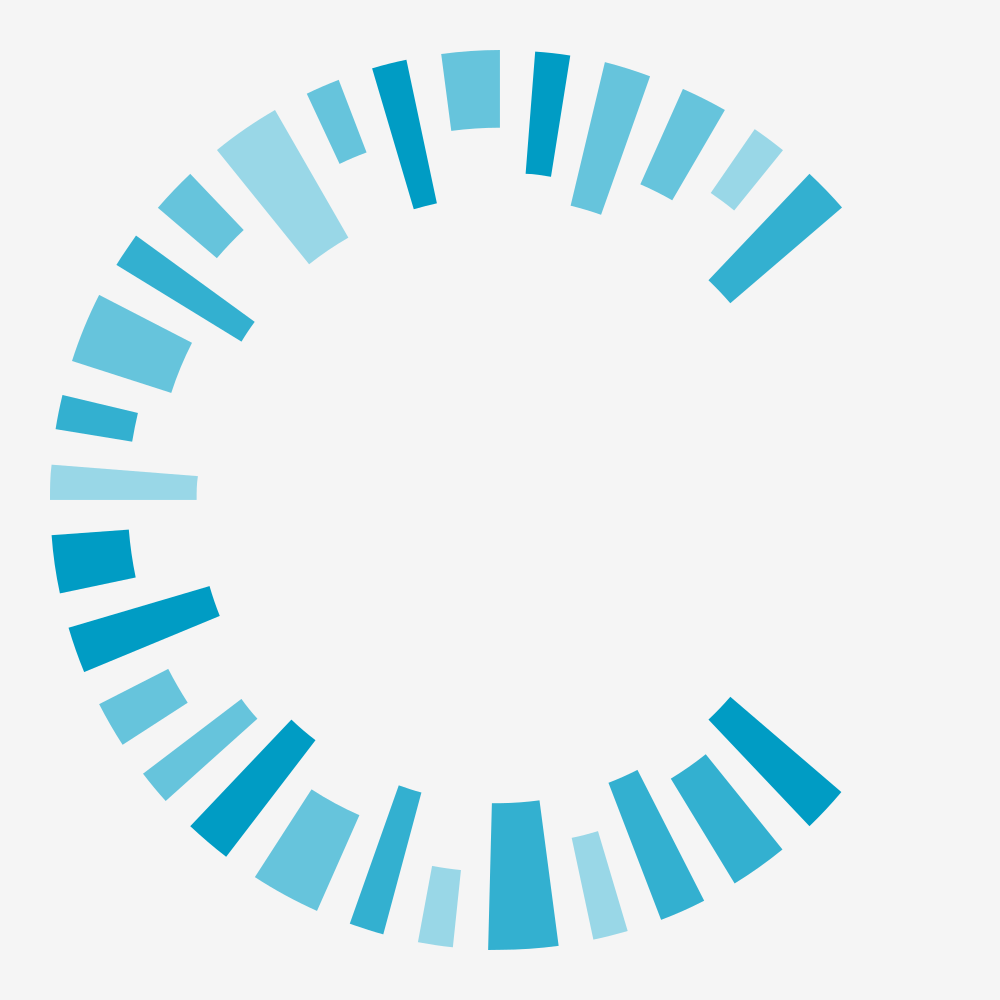
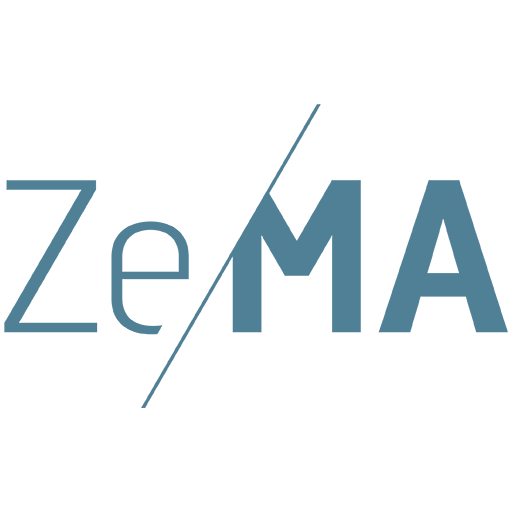
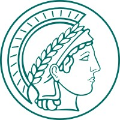
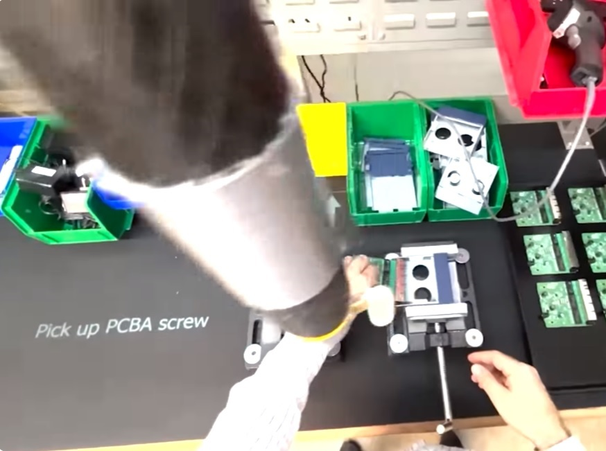
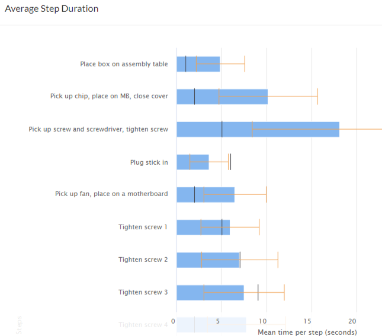
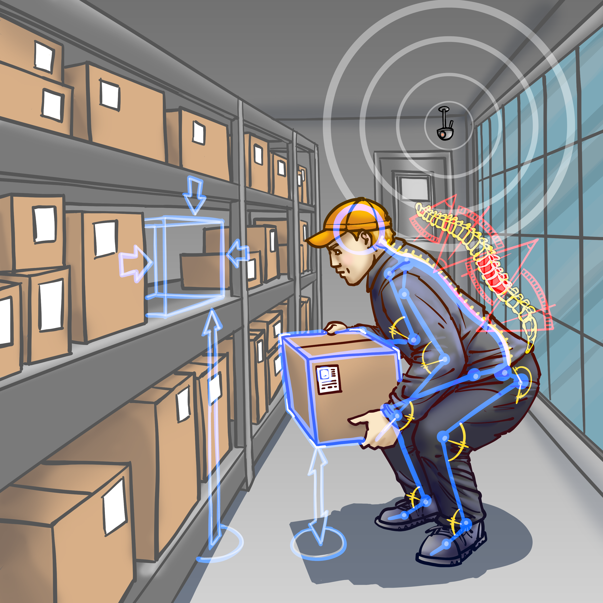
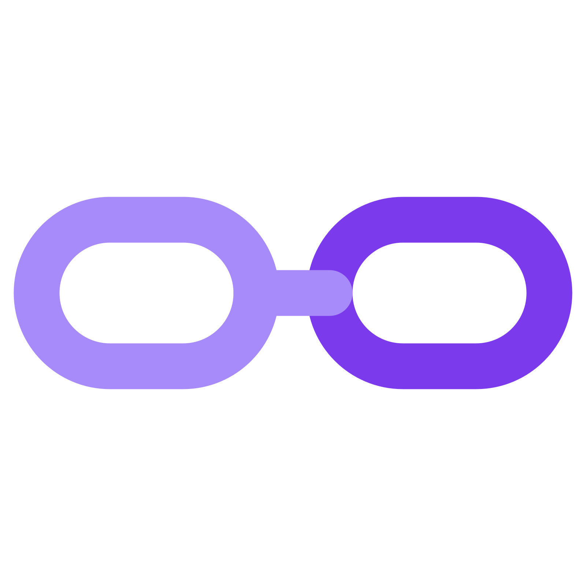
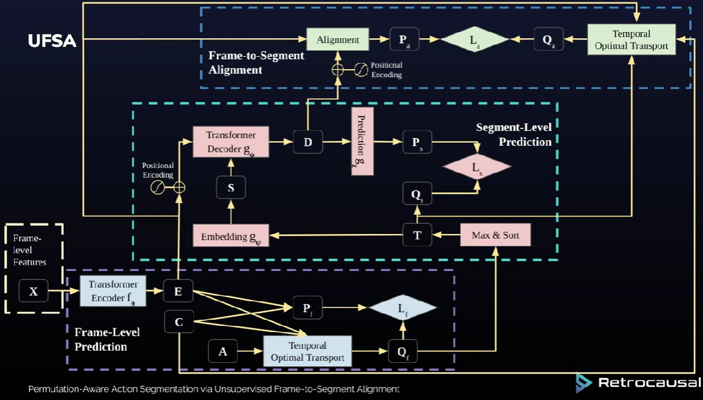
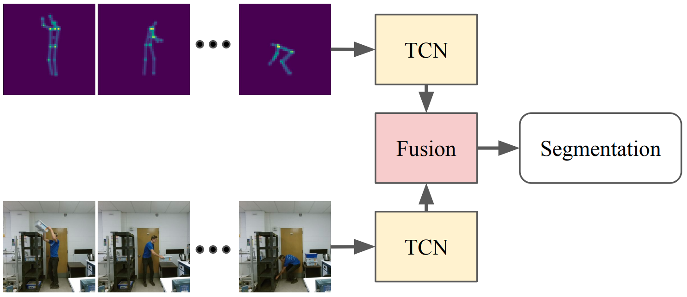

Shreyansh Tripathi
AI Engineer · MS DSAI @ Saarland University
I build AI systems at the intersection of computer vision, LLMs, and agentic workflows. Currently pursuing an DSAI in Computer Science at Saarland University.
Previously a Computer Vision Working Student at CISPA on deepfake detection — finetuning vision foundation models at scale on clusters of 8×A100 GPUs. Also a HiWi at MPI Informatics on co-speech gesture synthesis using latent diffusion models, a Computer Vision Engineer at Retrocausal (Redmond, WA) for 3+ years building markerless MoCap and action segmentation systems deployed at Ford, Honda, and Nissan, and a Research Assistant at Zema exploring RAG and AI agent frameworks.
On the side I build agentic AI products — including an end-to-end blogger outreach tool powered by Openclaw, and an LLM companion with vision and persistent memory.

Work Experience

Finetuned vision foundation models on a large-scale collection of deepfakes using clusters of 8×A100 GPUs. Conducted large-scale generation of synthetic deepfake datasets to expand training coverage and improve detection robustness.

Evaluated instruction-following and few-shot learning of the latest open- and closed-source LLMs. Built a personal AI companion using GPT-4o with function calling and RAG retrieval (Pinecone). Explored agentic frameworks including n8n and crewAI to build AI workflows and automation pipelines.

Built up expertise in diffusion models progressively: started with unconditional image generation, then conditioned models on class labels to understand classifier-free guidance. Graduated to latent diffusion models for monadic co-speech gesture synthesis — first unconditional, then conditioned on speech transcription to generate gestures that naturally accompany spoken language.

Empower your operators, engineers, and managers to dramatically boost the quality and productivity of your manual processes. Create digital mistake-proofing mechanisms for a variety of assembly and packing processes. Pathfinder tracks individual steps of an assembly process, and offers audible and visual alerts to help associates avoid mistakes.

Collects timing data for every cycle performed on a line, at a fine-grained level. It identifies non-value add work as well as most efficiently performed cycles. These capabilities directly aid industrial engineers in improving processes. Additionally, Pathfinder grades individual assembly sessions, versus ideal number of cycles that could have been performed and considering operator mistakes. This further helps engineers compare and contrast different sessions and work styles to rapidly improve processes.

Computer vision based "in-process" health and safety analytics. Analyzes videos recorded from ordinary phone cameras via a mobile app or web portal upload. Uses state-of-the-art computer vision technology to compute 3D skeletal poses and extract 3D joint angles, optimized for industrial use cases with robustness to partial obfuscation and extreme postures. Has significant advantages over wearables, goniometers, or Marker-Based Motion Capture Systems.
Personal Projects

Agentic AI tool for blogger outreach, built with Openclaw (formerly ClawdCode). A single click triggers the full pipeline: crawls the web to find relevant articles, mines editor contact emails, writes personalized outreach emails tailored to each article, and sends them — complete end-to-end automation of the link insertion workflow.
LLM-powered companion with a pair of eyes to perceive the world around you. Uses RAG retrieval (Pinecone) to recall past conversations like a true friend, and function calling to take actions. Token-efficient by design — only processes camera images when it deems necessary, keeping costs low without sacrificing context.
Predicts steering angle, detects objects, and classifies traffic lights at 4 FPS on a Jetson Nano. Bachelor thesis at NED University, 2020.
HuggingFace competition — pushed mAP to 0.59 with YOLOv5/v7/v8. Key insight: training on evenly-tiled image crops enables zoomed-in detection.
Extracted bee centroids from heatmap images to synthesize YOLO-format bounding boxes, then trained YOLOv5 for detection.
Built transformer decoder blocks one-by-one to deeply understand the architecture. Trained two models — one on Shakespeare, one on a subset of OpenWebText.
Fine-tuned GPT-2 on public Reddit conversations to capture sentiment on unfolding events in Pakistan. Hosted on HuggingFace Spaces.
Publications

